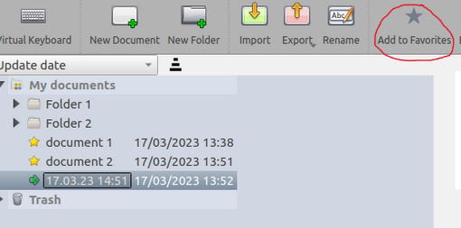
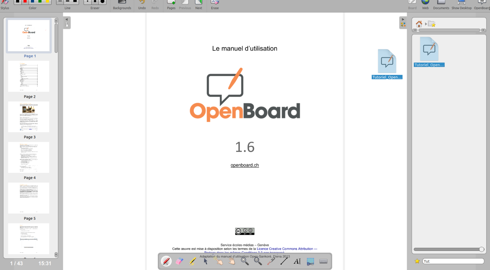

Aggiungere documenti OpenBoard ai preferiti
Introdotta nella versione 1.7, questa funzionalita permette di aggiungere i tuoi documenti OpenBoard ai preferiti.
Per farlo, passa alla modalita Documenti, seleziona un documento e fai clic su nella barra degli strumenti.

Passare rapidamente da un documento all'altro
I documenti preferiti appaiono nella libreria OpenBoard, sotto .
Ogni documento preferito puo essere trascinato direttamente sulla lavagna.

Documenti aperti di recente
Ogni documento aperto viene aggiunto temporaneamente ai preferiti, per passare rapidamente da uno all'altro durante la stessa sessione, senza doverli contrassegnare esplicitamente.